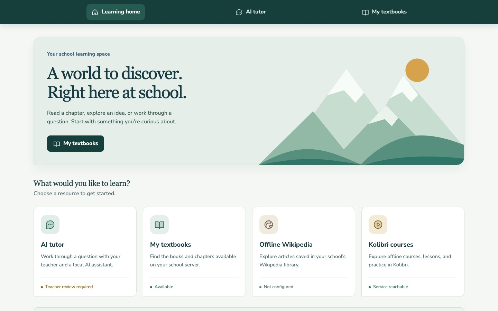
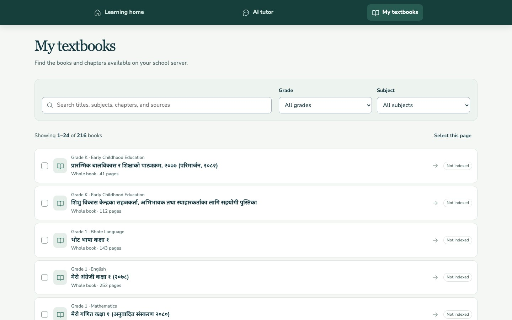
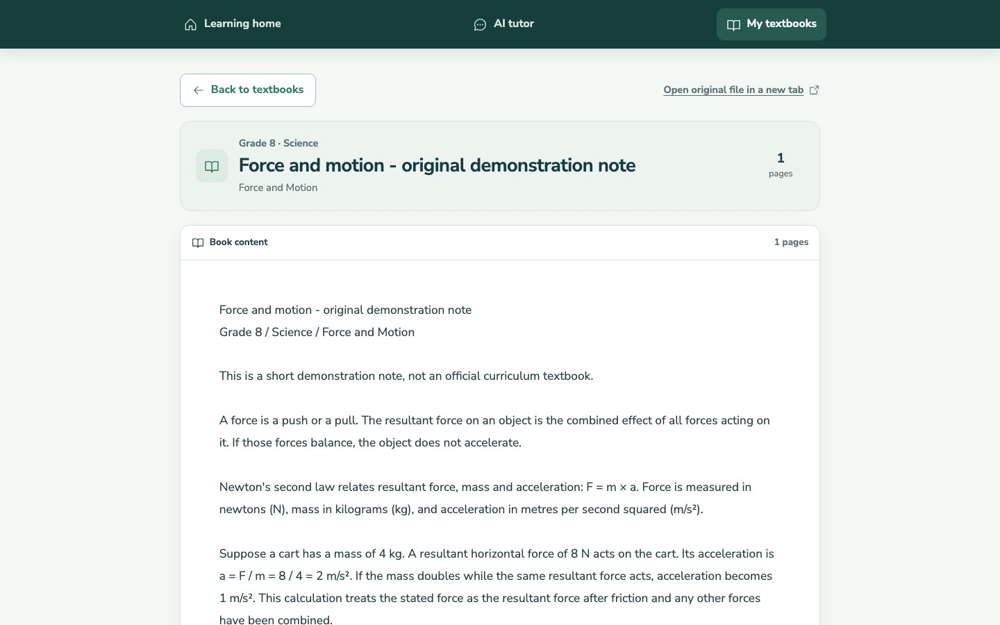
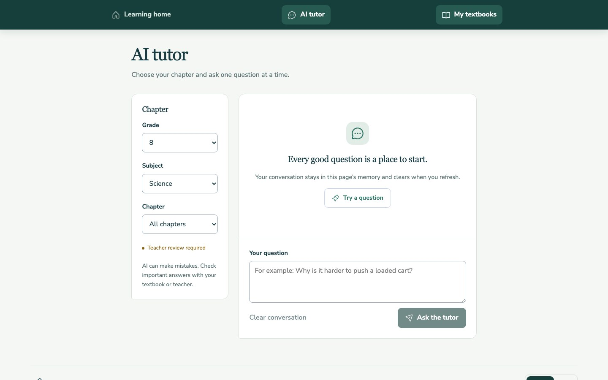
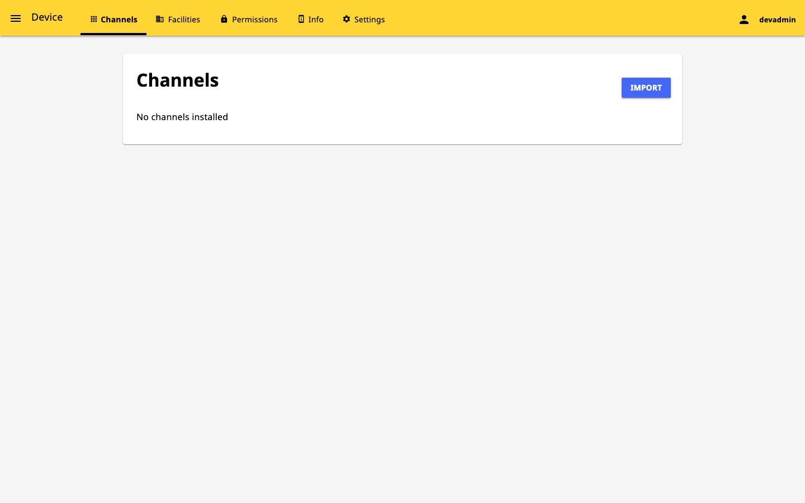

From a school library to a question worth checking.
Books and installed lessons can stay on the school network. The portal, local book search, LM Studio Phi-4 test profile, and one PhET Kolibri channel now run in development. Student LAN access and school acceptance are still ahead.
A simple path, with each handoff visible.
Teachers choose the material. The student portal serves it locally. The tutor adds a separate, reviewable path for questions.
-
Staff imports only school-reviewed material.
An authorized staff member imports a PDF or text file. The API stores its catalog details and page-aware text in the school's data volume. Copyright and curriculum approval happen before import.
Import flow tested locally -
Students open the portal over school Wi-Fi after LAN setup.
The student browser will connect to the local portal. The current Docker ports bind to the host loopback address, so other devices cannot reach them yet. The private prototype catalog has 216 CDC PDFs, and Kolibri has one imported PhET channel with eight resources.
Portal and file access tested -
Students ask when the school enables the tutor.
The tutor currently uses local SQLite FTS5 keyword search when embedding and Qdrant services are not configured. The development profile sends the prompt to LM Studio running Phi-4 Mini Instruct on the same host. A hosted provider is a separate option that receives the question, recent conversation, and retrieved excerpts.
39-probe model comparison complete · school review open -
Sources are visible, and a no-match answer says so.
Retrieved pages appear with the answer for review. If no passage matches, the tutor labels its response as a general explanation instead of implying it came from a textbook. Teachers remain responsible for checking accuracy and language quality.
Source and no-match states covered by tests
Scroll through the screens. Play the whole run.
The frame follows the story as you read. The recording is a real local prototype session, not a school deployment.





-
Start with resources on the school server.
The home screen shows which local services are reachable. The development setup now has a local Phi-4 tutor profile and a reachable Kolibri PhET channel.
-
Browse 216 local K–12 titles.
Search by title, subject, or chapter, filter by grade and subject, paginate, and select books. The catalog stays clear until a student opens a title.
-
Open a title in its own reading screen.
Clicking a catalog entry opens its own route with document details and readable content. The screenshot uses the repository's CC0 demonstration note, not a private CDC PDF.
-
Choose a grade, subject, and chapter.
The local test profile returns real Phi-4 replies and searches ready books with SQLite FTS5. A fresh deployment still keeps AI disabled until an operator enables it.
-
Kolibri has one local PhET channel.
The local facility is configured and reachable from the portal, with one imported PhET channel and eight resources. Kolibri keeps its own accounts and course progress; school classes and learner accounts are not configured.
Watch an earlier prototype walkthrough
Silent capture of an earlier portal, catalog, CC0 sample reader, tutor setup, and Kolibri channel manager. It predates the Phi-4 evaluation and PhET import; private K–12 PDFs are not included in this public website.
Local access depends on what was prepared.
Can stay on the school network
- The portal and books already imported into its local catalog.
- Kolibri channels already installed on the school server.
- Chat handled by a reachable local LM Studio Phi-4 service, when enabled.
Needs setup or an internet connection
- Hosted AI calls and downloading new material from online providers.
- Semantic vector retrieval until embeddings and Qdrant are configured; local keyword search is available.
- Additional Kolibri lessons, classes, and learner accounts until school staff set them up.
Offline readiness is a deployment check, not a property of the word “offline-first.” Every required book, lesson, service, and device still needs a WAN-off test at school.
See what works today and what still needs proof.
The project status page separates software checks from school acceptance.